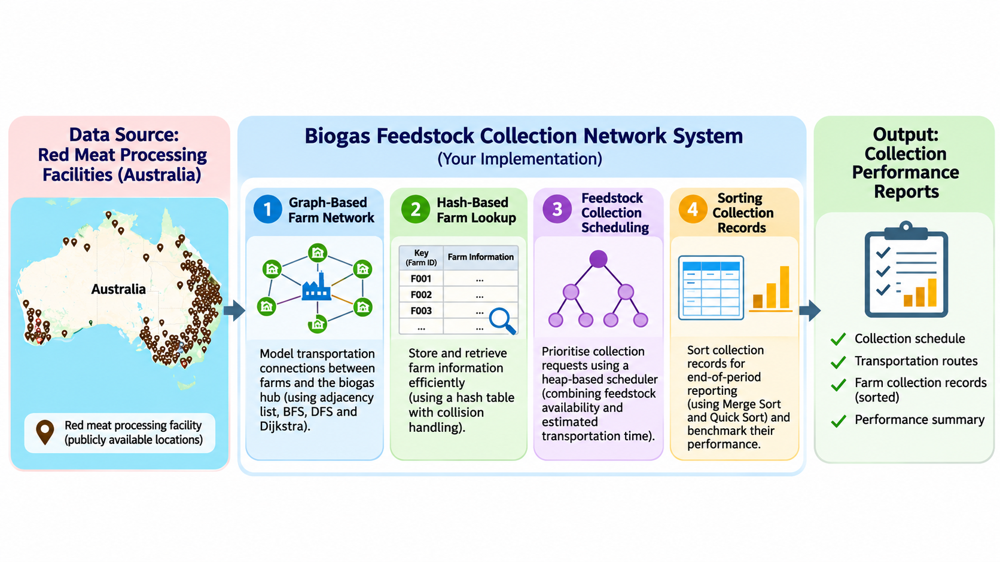
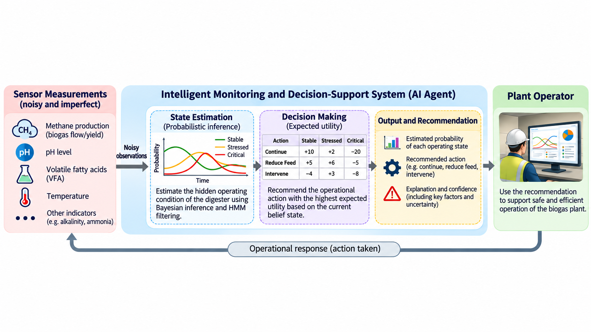
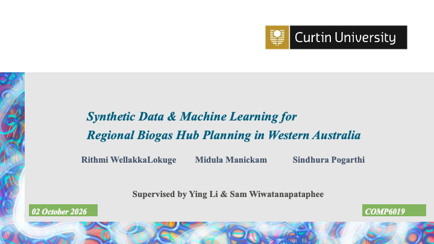
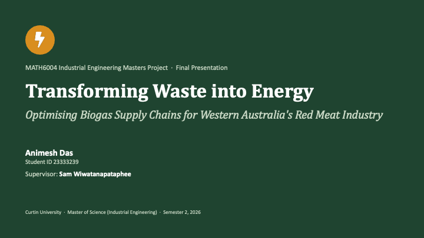
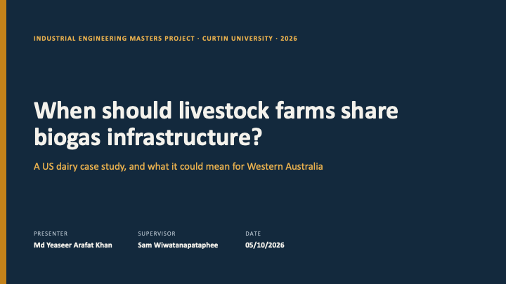

Project Timeline
Phase 1: Data Collection and Exploration
Industry context review, sustainability challenges, data exploration, and project scoping.
Phase 2: Data Engineering
Development and release of a synthetic data generation framework, including linked datasets, validation tools, and documentation.
Phase 3: Machine Learning Framework
Development of predictive models for biogas yield and resource demand, alongside the design of student projects.
Phase 4: Assignments & Projects Design
Development and implementation of industry-informed assignments and projects using the developed frameworks.
Phase 5: Optimisation Framework
Development of optimisation models for resource allocation and process efficiency, alongside the design of student projects.
Phase 6: Evaluation of Curriculum Integration
Evaluation of curriculum integration, student learning outcomes, and opportunities for future improvements.
Phase 1: Data Collection and Exploration
Data Assets
| Asset | Role in project | Initial use | Key risks and actions |
|---|---|---|---|
TEA_Spreadsheet.xlsm |
Site-specific techno-economic assessment workbook for a red-meat processing biogas/anaerobic digestion facility | Calibrate economic parameters, resource prices, CAPEX assumptions, scenario outputs, NPV logic, sensitivity cases, and site-level operating assumptions | Macros and spreadsheet formulas may be opaque. Extract input/output tables, define a reproducible Python reference model, and keep the workbook as a benchmark rather than the production engine. |
dataset.xlsx |
Literature dataset of methane yield observations across substrates, reactor types, pretreatments, temperature, time, and units | Build methane-yield priors, feature taxonomy, unit-conversion pipeline, baseline ML models, and synthetic generator calibration | Mixed units, missing values, categorical inconsistency, and possible outliers. Prioritise unit harmonisation and data-quality flags before modelling. |
TEA_Spreadsheet.xlsm
The spreadsheet core objective is to provide a Techno-economic assessment (TEA) model for a biogas/anaerobic digestion facility for a red-meat processing site. The TEA workbook contains sheets for assumptions, resource prices, engine factors, CAPEX, biogas data, site-specific scenario information, facility calculations, NPV scenarios, summary outputs, sensitivity analysis, and BMP references.
Since the TEA workbook is confidential the data extraction functionality is ommited from the public release. Instead, the TEA workbook will be used as a reference for logic and calibration, while the curated dataset will serve as the operational experimentation source for reproducible, versionable, and course-safe synthetic tables.
dataset.xlsx
The dataset has 1,375 rows and 15 columns, including methane yield, substrate, inoculum, reactor type, temperature, retention time, pretreatment, and units. The dataset is a curated collection of literature values for methane yield under various experimental conditions. The dataset is used to build priors for methane yield, feature taxonomy, unit-conversion pipeline, baseline ML models, and synthetic generator calibration.
Profiling surfaced the issues below, which has to be addressed before any modelling or synthetic generation can be done:
| Issue | Evidence in the data | Consequence for the pipeline |
|---|---|---|
| No control/treatment pairing | The paper computes effect sizes (Hedges' g) from control vs. treated pairs, but the spreadsheet has no pairing key and no untreated-control rows. | We model absolute yield, not effect size. The pairing structure can't be recovered, so synthesizing effect sizes is out of scope. |
| ~45 unit spellings | mL/g VS, L/Kg VS, Nm³/kg VS, m³/t VS, mL/g COD… mixing volume basis (mL/L/m³) and denominator chemistry (VS/COD/OM). |
A unit normalizer is mandatory before anything else. Mixing COD- and VS-based yields would make the target physically meaningless. |
| Free-text in numeric cells | temp_c='32-34', stirring_rpm='200-300 rpm. 15 min on…', yields stored as Excel datetimes (2020-07-13). |
Robust parsing (range→midpoint, datetime rejection) is required; naïve to_numeric silently drops 4–1048 values per column. |
| High-cardinality categoricals | 185 substrate spellings, 172 inoculum, 256 pretreatment descriptions, with case/typo duplicates (Wheat straw/wheat straw, Chemica+Physical). |
Canonicalization + rare-category collapsing, or the categorical model drowns in singletons. |
| Heavy-tailed target | Raw yield spans 0.013 → 2,816,505 (unit errors). After normalization, 96.9% fall in the physical 10–1,200 mL/gVS band. | Hard domain bounds + rejection sampling; the tail is data error, not signal. |
| Severe missingness | stirring_rpm 76% missing, reactor_type 14%, time_days 8%. |
Generator must preserve missingness patterns, not impute them away. |
Phase 2: Data Engineering Framework
Synthetic Methods and Justification
Three generator families with a train-on-synthetic / test-on-real (TSTR) protocol are benchmarked. AHistGradientBoosting regressor is trained on synthetic data and scored on a held-out real test set, then compared to train-on-real (TRTR).
| Generator | Target KS ↓ | TRTR R² | TSTR R² | Utility ratio | Privacy ratio |
|---|---|---|---|---|---|
| GaussianCopula (SDV) | 0.05 | 0.69 | 0.01 | 0.01 | 43.7 |
| CTGAN (60 ep) | 0.33 | 0.69 | −0.58 | — | 23.3 |
| CTGAN (400 ep, 256×256) | 0.17 | 0.69 | −0.27 | — | 23.0 |
| ConditionalJitter (recommended) | 0.019 | 0.69 | 0.81 | 1.17 | 2.97 |
substrate → yield. 185 substrate categories each pin the target to a narrow band; an unconditional generator that gets each marginal right but scrambles the joint destroys exactly the information the regressor needs.
The fix is a structure-aware, group-conditional generator that resamples within each substrate group and adds calibrated noise — preserving the conditional means while injecting controllable variance. It reaches TSTR R² 0.81 > TRTR 0.69: a model trained purely on its output generalizes to real data better than one trained on the small real set, because the synthetic set smooths sampling noise within each substrate group. Privacy ratio 2.97 confirms it isn't memorizing (synthetic rows sit ~3× farther from real rows than real rows sit from each other).
Takeaway for the design: for tabular scientific data dominated by a high-cardinality conditional driver, conditional/structure-aware generation beats deep unconditional generators (CTGAN/TVAE) regardless of how long you train them.
Data Generation Pipeline
┌─────────────────────────────┐
│ 1. configs/course_safe.yml │ public and internal YAML config
└──────────────┬──────────────┘ for synthetic generation
│
▼
┌─────────────────────────────┐
│ 2. CLI: generate │ unified CLI for generation and validation
│ • validate mode │
│ • apply CLI overrides │
└──────────────┬──────────────┘
│
▼
┌─────────────────────────────────────────┐
│ 3. generate_course_safe_dataset() │ generate multi csv synthetic dataset
└──┬────────────────────────────────────┬─┘
│ │ • public-safe rule-based bounded
│ ▼ stochastic sampling
│ • clean dataset.xlsx ┌─────────────────────────┐
│ • domain filler │ TEA Parameter Sampler │
│ • ConditionalJitterGenerator │ • feedstock │
▼ │ • facility │
┌─────────────────────┐ │ • logistics │
│ Methane Yield │ │ • market │
│ • scenario_id keyed │ │ • scenarios │
└──────────┬──────────┘ └──────────┬──────────────┘
│ │
└──────────────┬───────────────────┘
▼
┌───────────────────────────────────┐
│ 4. write_course_safe_dataset() │ write synthetic dataset to disk
└───────────────┬───────────────────┘
▼
data/synthetic/*.csv
• methane_yield • feedstock_sources
• facility_parameters • logistics
• market_assumptions • scenarios
• scenario_metadata
│
▼
┌──────────────────────────┐
│ 5. validation_summary() │
│ • schema │
│ • constraints │
│ • missing values │
│ • privacy/precision │
└───────────┬──────────────┘
▼
validation_summary.json
Synthetic Data Relationships
The public release is a linked relational-style synthetic dataset. Every public table usesscenario_id as the primary join key. The feedstock and facility tables also expose feedstock_source_id and facility_candidate_id so the logistics and scenario tables can join without needing confidential TEA extracts.
┌────────────────────┐
│ methane_yield.csv │
└─────────┬──────────┘
│
┌────────────┴─────────────┐
▼ ▼
┌─────────────────┐ ┌────────────────────────┐
│ scenarios.csv │ │ scenario_metadata.csv │
└──────────┬──────┘ └────────────────────────┘
│
┌────────────┼──────────────┐
▼ ▼ ▼
┌───────────┐ ┌──────────────┐ ┌───────────────┐
│feedstock_ │ │facility_ │ │market_ │
│sources.csv│ │parameters.csv│ │assumptions.csv│
└────┬──────┘ └────┬─────────┘ └───────────────┘
│ │
└──────┬──────┘
▼
┌───────────────┐
│ logistics.csv │
└───────────────┘
scenario_id is the canonical public identifier for a single synthetic scenario. It links methane-yield assumptions, feedstock availability, facility parameters, logistics assumptions, market assumptions, scenario summaries, and release metadata.
Synthetic Data Description
| CSV file | What it contains | Primary join keys | Main use in workflow |
|---|---|---|---|
methane_yield.csv |
Core methane-yield assumptions and process context (feedstock, pretreatment, reactor, temperature, retention time, yield uncertainty). | scenario_id |
Starting table for scenario-level joins and methane-performance analysis. |
feedstock_sources.csv |
Feedstock availability and quality descriptors (quantity, seasonality, moisture, volatile solids, contamination risk, gate fee). | scenario_id, feedstock_source_id |
Supply-side inputs for logistics and facility matching. |
facility_parameters.csv |
Facility design and economics (capacity, CAPEX/OPEX, utilities, CHP efficiencies, discount rate, project life). | scenario_id, facility_candidate_id |
Facility assumptions for techno-economic and optimisation-ready scenarios. |
logistics.csv |
Transport linkage between feedstock sources and facility candidates (distance, costs, emissions, collection radius). | scenario_id, feedstock_source_id, facility_candidate_id |
Route-level logistics constraints and cost/emissions calculations. |
market_assumptions.csv |
Market-side assumptions (electricity/heat/carbon prices, certificate value, volatility flag). | scenario_id |
Revenue and sensitivity inputs for downstream modelling. |
scenarios.csv |
Scenario-level consolidated view (scenario type, feedstock and facility references, throughput, distance, expected energy). | scenario_id, feedstock_source_id, facility_candidate_id |
Compact table for ML experiments, uncertainty analysis, and optimisation smoke tests. |
scenario_metadata.csv |
Generation metadata and release flags (seed, timestamp, mode, course-safe marker, validation status). | scenario_id |
Governance and traceability; validation_status changes from pending to validated after successful validation. |
Phase 3: ML Framework
Development of predictive models for biogas yield and resource demand, alongside the design of student projects.
Phase 3 focuses on developing machine learning frameworks to predict biogas production and resource utilisation, while integrating industry-relevant sustainability challenges into student research projects. Building on the synthetic data framework established in Phase 2, postgraduate students investigated predictive modelling for regional biogas hub planning in Western Australia. Using synthetic datasets informed by industry techno-economic assessments and real anaerobic digester data, students developed and evaluated multiple machine learning models. For example, Random Forest, XGBoost, and Long Short-Term Memory (LSTM) networks. These models aimed to predict methane yield, electricity generation, and carbon emission reductions based on feedstock characteristics and operational parameters. Students conducted exploratory data analysis, feature engineering, model optimisation, and comparative performance evaluation, gaining practical experience in applying artificial intelligence to sustainability challenges. The project establishes a predictive foundation for subsequent optimisation activities, demonstrating how industry-informed research can enhance experiential learning and support data-driven decision-making in renewable energy and waste management.
Machine Learning Pipeline
Stage 01
Data Collection
Phase 4: Assignments & Projects Design
During Semester 2, 2026, we developed and implemented industry-informed assignments and student research projects that integrated real-world sustainability challenges into the teaching of computing, artificial intelligence, and applied mathematics.
638
STUDENTS ENGAGED
Semester 2, 2026
Authentic sustainability problems moved from research into live teaching.
Semester 2, 2026
Authentic sustainability problems moved from research into live teaching.
2
Teaching Units
3
Project Units
4
Campuses
Broad Reach
528
COMP1002/5008 Data Structures and Algorithms
Final Assignment · 426 Undergraduate + 102 Postgraduate · 4 Campuses103
COMP6009 Search and Logic Approaches in Machine Learning
Final Assignment · Postgraduate · 3 CampusesProject-Based Engagement
3
COMP6019 Predictive Analytics Project
2
MATH6004 Industrial Engineering Masters Project
1
MATH3004 Industrial Project
1
EECMS 2026/2027 Summer Scholarship
Industry-Informed Assignments
Explore how real-world biogas and sustainability challenges were incorporated into student assessments.

COMP1002/5008 Data Structures and Algorithms
Biogas Feedstock Collection Network: Data Structures and Algorithms for Sustainable Waste Management
An assignment exploring the design and implementation of a backend Biogas Feedstock Collection Network that manages farms information, represents transportation connections, prioritises feedstock collection requests, and produces collection performance reports.

COMP6009 Search and Logic Approaches in Machine Learning
Biogas Plant Intelligent Monitoring and Decision System for Biogas Plant Operations
An assignment requiring the development of an intelligent monitoring and decision-support system for biogas plant operations under uncertain conditions to manage and respond to varying operational scenarios effectively.
Student Projects Showcase
Discover the innovative projects created by students in response to real-world biogas and sustainability challenges.

MATH3004 Industrial Project
Techno-economic Assessment and Statistical Data Analysis of Anaerobic Red Meat Industry in Western Australia
A project assessing the techno-economic aspects and performing sensitivity and uncertainty analysis of the anaerobic digestion in the red meat industry in Western Australia.

COMP6019 Predictive Analytics Project
Synthetic Data and Machine Learning for Regional Biogas Hub Plannng in Western Australia
A project exploring synthetic data framework and predictive models for methane yield, electricity generation, and carbon emission reduction.

MATH6004 Industrial Engineering Masters Project
Transforming Waste into Energy: Optimising Biogas Supply Chains for Western Australia's Red Meat Industry
This project develops a mixed-integer linear programming (MILP) model for a WA anaerobic digestion hub that optimises feedstock selection, supplier contracts, transport, and water use, reducing annual electricity production costs while meeting the energy target.

MATH6004 Industrial Engineering Masters Project
Optimisation of a Livestock-Based Biogas Supply Chain Network for Sustainable Renewable Energy Production
This project develops a MILP model to optimise livestock biogas networks in California’s Central Valley, demonstrating that shared hub-and-spoke anaerobic digestion systems can increase annual net surplus compared with stand-alone facilities.
Phase 5: Optimisation Framework
Phase 5 focuses on developing a transferable, data-driven optimisation framework for regional biogas hub planning and operation. Building on the synthetic data and machine learning frameworks established in earlier phases, the proposed approach integrates spatial feedstock networks, predictive modelling, and techno-economic analysis to support sustainable decision-making. The framework aims to optimise biogas hub locations, facility capacities, feedstock allocation, and operational strategies while accounting for uncertainties in feedstock availability, process performance, and economic conditions. Through scenario analysis and stress testing, the framework will evaluate trade-offs between economic viability, environmental performance, and operational resilience. Applications in data-rich US and data-limited Australian contexts will further investigate the transferability of the modelling approach, providing a foundation for evidence-based planning and more resilient waste-to-energy systems.
Optimisation Framework Pipeline
Stage 01
Data Integration
Phase 6: Evaluation of Curriculum Integration
Collecting feedback across campuses from staffs and students to assess the effectiveness of curriculum integration and identify areas for improvement.
“This is indeed a good initiative since students are experiencing a real-world development scenario.”
Lecturer, COMP1002/5008, Curtin Mauritius
“I like the idea of restricting them for a standard, actual data set so that students get exposed to work around proper data. It changes the monotonous nature of previous semester assessments.”
Lecturer, COMP1002/5008, Curtin Colombo
“Incorporating a real-world scenario and dataset is an interesting approach, as it makes the assignment more practical and relevant to the students,”
Lecturer, COMP1002/5008, Curtin Malaysia
“The design and framing are excellent. The anaerobic digestion scenario at the Western Australian meat-processing facility offers an authentic, high-impact context for sustainability, clearly demonstrating how AI applies to real-world environmental engineering and resource recovery.”
Lecturer, COMP6009, Curtin Dubai